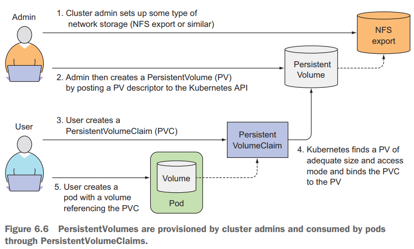

# volumes
我们可能希望新的容器可以在之前容器结束的位置继续运行，比如在物理机上重启进程。 可能不需要（或者不想要）整个文件系统被持久化， 但又希望能保存实际数据的目录
在 pod 启动时创建卷， 并在删除 pod 时销毁卷。在容器重新启动期间， 卷的内容将保持不变， 在重新启动容器之后， 新容器可以识别前一个容器写入卷的所有文件。 另外，如果一个 pod 包含多个容器， 那这个卷可以同时被所有的容器使用
Kubernetes 的卷是 pod 的一个组成部分， 因此像容器一样在 pod 的规范中就定义了。
它们不是独立的 Kubernetes 对象， 也不能单独创建或删除。
pod 中的所有容器都可以使用卷， 但必须先将它挂载在每个需要访问它的容器中。 在每个容器中， 都可以在其文件系统的任意位置挂载卷
卷类型
- emptyDir 用于存储临时数据的简单空目录
- gitRepo 通过检出 Git 仓库的内容来初始化的卷
- hostPath 用于将目录从工作节点的文件系统挂载到 pod 中
- configMap、secret、downwardAPI 用于将 Kubemetes 部分资源和集群信息公开给 pod 的特殊类型的卷
......
fortune-pod.yaml
apiVersion: v1 | |
kind: Pod | |
metadata: | |
name: fortune | |
spec: | |
containers: | |
- image: luksa/fortune | |
name: html-generator | |
volumeMounts: | |
- name: html | |
mountPath: /var/htdocs | |
- image: nginx:alpine | |
name: web-server | |
volumeMounts: | |
- name: html | |
mountPath: /usr/share/nginx/html | |
readOnly: true | |
ports: | |
- containerPort: 80 | |
protocol: TCP | |
volumes: | |
- name: html | |
emptyDir: {} |
作为卷来使用的 emptyDir 是在承载 pod 的工作节点的实际磁盘上创建的，因此其性能取决于节点的磁盘类型。
也可以通知 Kubemetes 在 tmfs 文件系统 (存在内存而非硬盘) 上创建 emptyDir. 因此，将 emptyDir 的 medium 设置为 Memory
volumes: | |
- name: html | |
emptyDir | |
medium: Memory |
创建 pod
$ kubectl create -f fortune-pod.yaml | |
$ kuberctl port-forward fortune 8080:80 | |
Forwarding from 127.0.0.1:8080 -> 80 | |
Forwarding from [::1]:8080 -> 80 | |
Handling connection for 8080 | |
...... |
查看 pod 描述
$ kubectl describe po/fortune | |
...... | |
Containers: | |
html-generator: | |
...... | |
Mounts: | |
/var/htdocs from html (rw) | |
/var/run/secrets/kubernetes.io/serviceaccount from default-token-b79jt (ro) | |
...... | |
Volumes: | |
html: | |
Type: EmptyDir (a temporary directory that shares a pod's lifetime) | |
Medium: Memory | |
SizeLimit: <unset> | |
default-token-b79jt: | |
Type: Secret (a volume populated by a Secret) | |
SecretName: default-token-b79jt | |
Optional: false | |
...... |
测试访问两种方式:
第一种浏览器访问:
浏览器输入 http://127.0.0.1:8080 或 http://localhost:8080
即可看到每过 10s 按 F5 刷新一次 HTML 页面内容都不一样第二种 curl 或 wget 访问
不去掉公司的 proxy 访问命令里加上 noproxy
$ curl http://127.0.0.1:8080 --noproxy "*" // "*" 对所有路径的访问都不经过配置的proxy |
也可以去掉公司的 proxy, 需要先执行 $ export http_proxy= 把公司的 proxy 去掉
再执行如下命令即可访问
$ curl -s http://127.0.0.1:8080 | |
$ curl -s http://localhost:8080 | |
$ wget http://127.0.0.1:8080 |
开启两个终端进入这两个 container，每过 10s 分别运行如下各自 container 里的 cat html 命令，发现 HTML 内容不断变化但两个容器的 html 内容一样
如果打开浏览器，发现浏览器输出跟这两个 container 里相应路径下 html 的内容都是一样同步变化的
$ kubectl exec po/fortune -c web-server -it -- sh | |
$ cat /usr/share/nginx/html/index.html | |
$ kubectl exec po/fortune -c html-generator -it -- sh | |
$ cat /var/htdocs/index.html |
# gitRepo 卷
gitRepo 容器就像 emptyDir 卷一样， 基本上是一个专用目录， 专门用于包含卷的容器并单独使用。 当 pod 被删除时， 卷及其内容被删除。 然而， 其他类型的卷并不创建新目录， 而是将现有的外部目录挂载到 pod 的容器文件系统中.
使用对应私有 Git repo 的 gitRepo 卷， 其实不可行。 Kubemetes 开发入员的共识是保待 gitRepo 卷的简单性， 而不添加任何通过 SSH 协议克隆私有存储库的支待， 因为这需要向 gitRepo 卷添加额外的配置选项。如果想要将私有的 Git repo 克隆到容器中， 则应该使用 gitsync sidecar 或类似的方法， 而不是使用 gitRepo 卷.
# hostPath 卷
hostPath 卷指向节点文件系统上的特定文件或目录，在同一个节点上运行并在其 hostPath 卷中使用相同路径的 pod 可以看到相同的文件.
持久性存储，因为 gitRepo 和 emptyDir 卷的内容都会在 pod 被删除时被删除， 而 hostPath 卷的内容则 不会被删除.
如果删除了一个 pod, 并且下一个 pod 使用了指向主机上相同路径的 hostPath 卷， 则新 pod 将会发现上一个 pod 留下的数据， 但前提是必须将其调度到与第一个 pod 相同的节点上.
不应该使用 hostPath 卷作为存储数据库数据的目录。因为卷的内容存储在特定节点的文件系统中，当数据库 pod 被重新安排在另一个节点时， 会找不到数据，这会使 pod 对预定规划的节点很敏感
请记住仅当需要在节点上读取或写入系统文件时才使用 hos 七 Path, 切勿使用它们来持久化跨 pod 的数据.
$ kubectl get pods -n kube-system | |
NAME READY STATUS RESTARTS AGE | |
...... | |
kube-apiserver-master-node 1/1 Running 5 2d20h | |
...... | |
$ kubectl describe po/kube-apiserver-master-node -n kube-system | |
...... | |
Containers: | |
kube-apiserver: | |
...... | |
Mounts: | |
/etc/kubernetes/pki from k8s-certs (ro) | |
/etc/pki from etc-pki (ro) | |
/etc/ssl/certs from ca-certs (ro) | |
...... | |
Volumes: | |
ca-certs: | |
Type: HostPath (bare host directory volume) | |
Path: /etc/ssl/certs | |
HostPathType: DirectoryOrCreate | |
etc-pki: | |
Type: HostPath (bare host directory volume) | |
Path: /etc/pki | |
HostPathType: DirectoryOrCreate | |
k8s-certs: | |
Type: HostPath (bare host directory volume) | |
Path: /etc/kubernetes/pki | |
HostPathType: DirectoryOrCreate |
Pod 使用三个 HostPath 卷来访问宿主主机的 /etc/ssl/certs, /etc/pki, /etc/kubernetes/pki 三个目录.
# PV & PVC & storageclass(sc)
在 Kubemetes 集群中为了使应用能够正常请求存储资源， 同时避免处理基础设施细节， 引入了两个新的资源， 分别是待久卷和持久卷声明。这名字可能有点误导，因为正如在前面看到的， 甚至常规的 Kubemetes 卷 也可以用来存储持久性数据
在 pod 中使用 PersistentVolume (持久卷， 简称 PV) 要比使用常规的 pod 卷复杂一些
研发人员无须向他们的 pod 中添加特定技术的卷， 而是由集群管理员设置底层存储， 然后通过 Kubernetes API 服务器创建持久卷并注册。 在创建持久卷时， 管理员可以指定其大小和所支持的访问模式.
当集群用户需要在其 pod 中使用持久化存储时， 他们首先创建持久卷声明 (PersistentVolumeClaim, 简称 PVC) 清单， 指定所需要的最低容量要求和访问模式，然后用户将待久卷声明清单提交给 Kubernetes API 服务器， Kubernetes 将找到可匹配的待久卷并将其绑定到持久卷声明
持久卷声明可以当作 pod 中的一个卷来使用， 其他用户不能使用相同的持久卷，除非先通过删除持久卷声明绑定来释放.

$ kubectl get pv | |
$ kubectl get pvc -n default | |
NAME STATUS VOLUME CAPACITY ACCESS MODES STORAGECLASS AGE | |
mysql-pv-claim Bound pvc-522c119b-a968-4a86-ae6c-521b64b775ee 20Gi RWO rook-ceph-block 5d2h | |
wp-pv-claim Bound pvc-4b83da7a-4552-4806-9f68-af96d4a56d96 20Gi RWO rook-ceph-block 5d2h | |
$ kubectl get sc // storageclass的简写(sc) |
# Additional:
# CephFS example
创建 CephFS
apiVersion: ceph.rook.io/v1 | |
kind: CephFilesystem | |
metadata: | |
name: myfs | |
namespace: rook-ceph | |
spec: | |
metadataPool: | |
replicated: | |
size: 3 | |
dataPools: | |
- replicated: | |
size: 3 | |
preservePoolsOnDelete: true | |
metadataServer: | |
activeCount: 1 | |
activeStandby: true |
创建 sc (StorageClass), sc 是不需要提前创建好 PV, 而是根据 PVC 需求动态创建 PV.
apiVersion: storage.k8s.io/v1 | |
kind: StorageClass | |
metadata: | |
name: rook-cephfs | |
# Change "rook-ceph" provisioner prefix to match the operator namespace if needed | |
provisioner: rook-ceph.cephfs.csi.ceph.com | |
parameters: | |
# clusterID is the namespace where operator is deployed. | |
clusterID: rook-ceph | |
# CephFS filesystem name into which the volume shall be created | |
fsName: myfs | |
# Ceph pool into which the volume shall be created | |
# Required for provisionVolume: "true" | |
pool: myfs-data0 | |
# Root path of an existing CephFS volume | |
# Required for provisionVolume: "false" | |
# rootPath: /absolute/path | |
# The secrets contain Ceph admin credentials. These are generated automatically by the operator | |
# in the same namespace as the cluster. | |
csi.storage.k8s.io/provisioner-secret-name: rook-csi-cephfs-provisioner | |
csi.storage.k8s.io/provisioner-secret-namespace: rook-ceph | |
csi.storage.k8s.io/node-stage-secret-name: rook-csi-cephfs-node | |
csi.storage.k8s.io/node-stage-secret-namespace: rook-ceph | |
reclaimPolicy: Delete |
创建 PVC 和 deployment
PV 是 K8S 全局资源
PVC 是指定在某个 Namespace 下的 K8S 资源，如果 PVC 访问属性为 ReadWriteMany， 多个不同 Pod 挂载此相同的 PVC 到容器指定目录，该目录将共享文件
多个不同 Pod 挂载不同的 PVC 到容器指定目录，则文件不能共享
apiVersion: v1 | |
kind: PersistentVolumeClaim | |
metadata: | |
name: my-pvc | |
namespace: kube-system | |
spec: | |
accessModes: // PV 具有的访问部署属性， PVC绑定后也应具有的访问部署属性(可读,可写,多机部署) | |
- ReadWriteMany | |
resources: | |
requests: | |
storage: 1Gi | |
storageClassName: rook-cephfs | |
--- | |
apiVersion: apps/v1 | |
kind: Deployment | |
metadata: | |
name: my-test | |
namespace: kube-system | |
labels: | |
app: my-test | |
kubernetes.io/cluster-service: "true" | |
spec: | |
replicas: 2 | |
selector: | |
matchLabels: | |
app: my-test | |
template: | |
metadata: | |
labels: | |
app: my-test | |
kubernetes.io/cluster-service: "true" | |
spec: | |
containers: | |
- name: my-test | |
image: registry:2 | |
imagePullPolicy: IfNotPresent | |
resources: | |
limits: | |
cpu: 100m | |
memory: 100Mi | |
volumeMounts: | |
- name: my-volume | |
mountPath: /var/lib/myVolume | |
volumes: | |
- name: my-volume | |
persistentVolumeClaim: | |
claimName: my-pvc // 绑定上面的PVC | |
readOnly: false | |
affinity: | |
podAffinity: | |
requiredDuringSchedulingIgnoredDuringExecution: | |
- labelSelector: | |
matchExpressions: | |
- key: app | |
operator: In | |
values: | |
- helm | |
topologyKey: kubernetes.io/hostname |